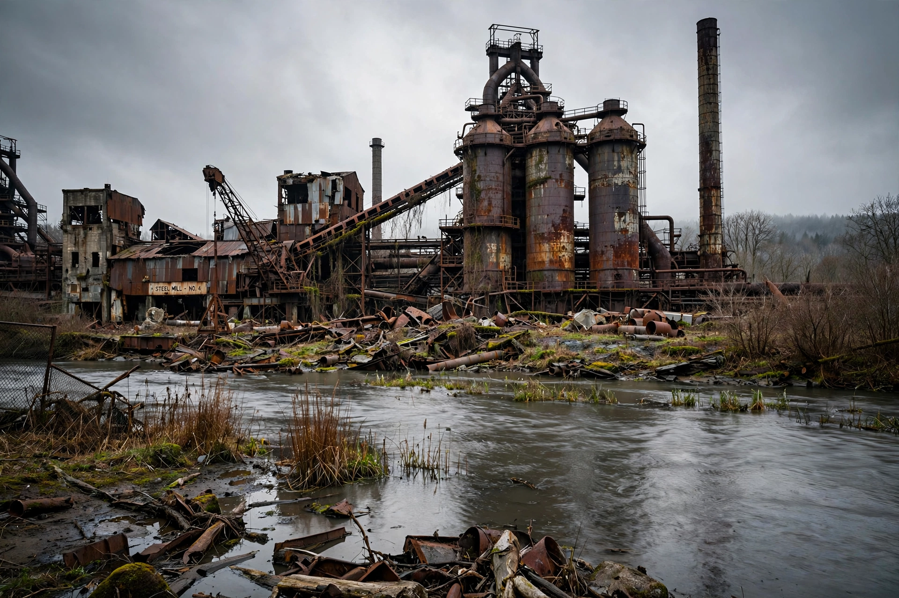

| Rust Belt | |
|---|---|
 | |
| Country | United States |
| States | New York, Pennsylvania, Ohio, Indiana, Michigan, Illinois, Wisconsin, West Virginia and parts of the upper Midwest / Great Lakes region |
| Major cities | Detroit, Cleveland, Pittsburgh, Buffalo, Milwaukee, St. Louis, Youngstown, Flint, Gary |
| Former name | Manufacturing Belt / Factory Belt |
| Term popularised | 1984 (Walter Mondale campaign) |
The Rust Belt is a region of the United States, largely in the Great Lakes and Midwestern states, that experienced industrial decline starting in the 1970s and 1980s. Once the centre of American heavy industry — steel, automobiles, coal, and manufacturing — the region was left with abandoned factories, population loss, and urban decay, from which the evocative name derives. The phrase "rust belt" was popularised in national politics during the 1984 presidential campaign.
Abundant coal, iron ore shipped across the Great Lakes, and canal and rail networks made the region the workshop of America by the late 19th century. After the Second World War its factories employed millions. From the 1970s, foreign competition, automation, the relocation of plants to the US South and abroad, and declining demand for steel led to mass layoffs and mill closures. Cities such as Youngstown, Ohio ("Black Monday", 1977) and Detroit, Michigan — which filed for municipal bankruptcy in 2013 — became emblems of the decline.
Population fell sharply in many industrial cities, with attendant fiscal crises and social problems including the opioid epidemic. Since the 1990s some cities have partially reinvented themselves around healthcare, education, and technology — Pittsburgh's transition from steel to "eds and meds" is often cited — while other communities continue to struggle. The region's electoral importance as a bloc of swing states has kept deindustrialisation central to American politics.